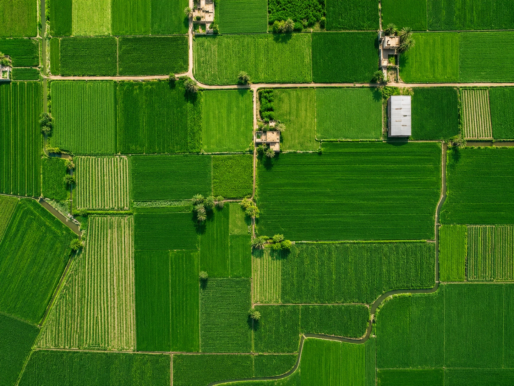
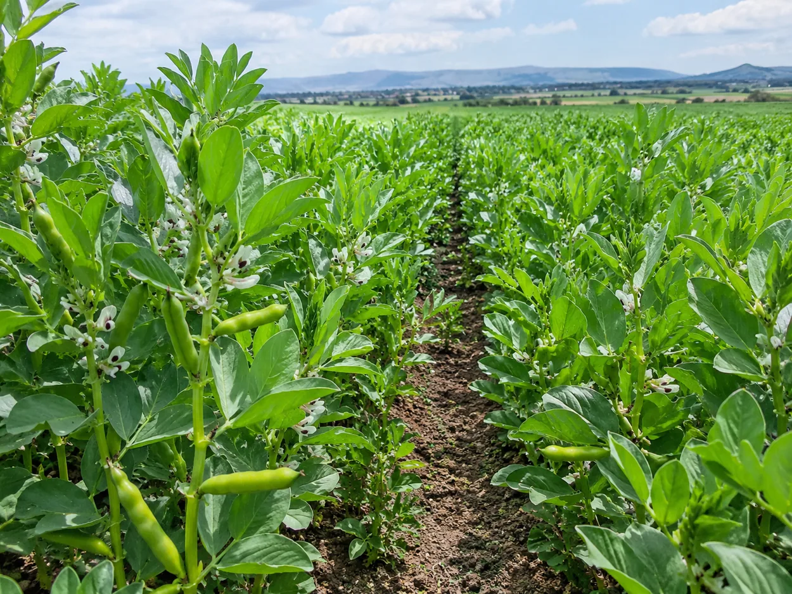
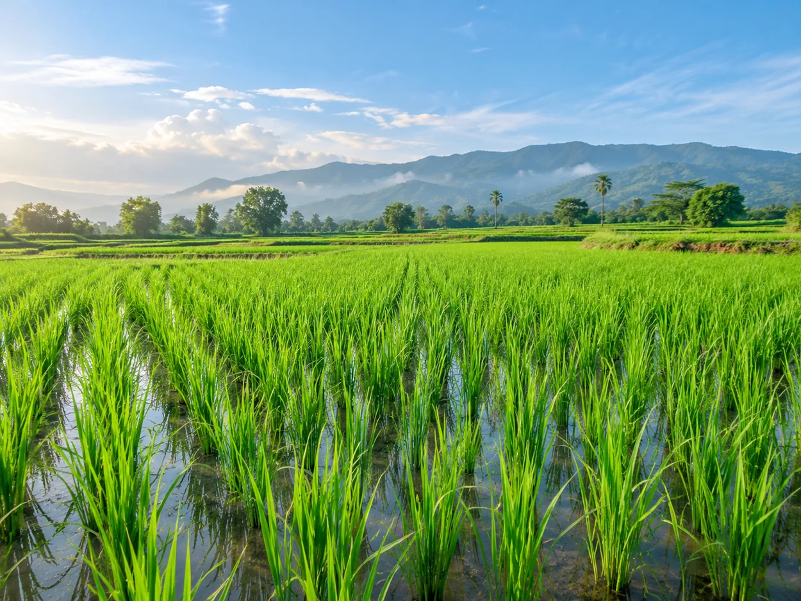
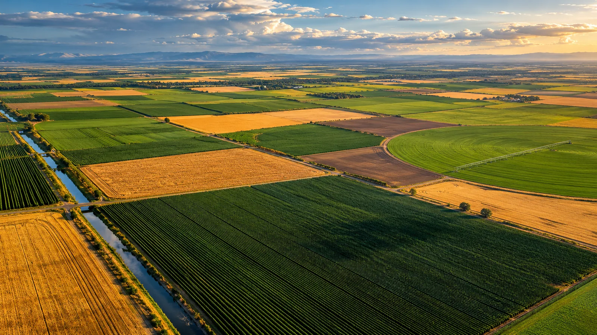

01 / WINTER CEREAL
 GRAIN CEREAL
GRAIN CEREALWinter wheat
Cool-season grain · a familiar starting point for crop rotation.
A visual journey through the crops behind better rotation decisions. Grounded in real agriculture. Informed by Earth observations.


Twelve crop ETc models and species-specific environmental evidence. Ten annual crops can enter hypothetical rotation comparisons. Explore each crop’s character, season, and agronomic role, then open the studio to compare the modeled trade-offs.
Discover two winter-season crops in the current AgriShift prototype. Each one opens a different path for the following season.
Explore winter crops in the model ↗GRAIN CEREALCool-season grain · a familiar starting point for crop rotation.

LEGUMEWinter legume · adding a different crop family to the rotation.
Warm-season crops shape the next part of the sequence. Compare their modeled crop-water needs rather than assuming every field needs the same plan.
See rotation alternatives ↗
SUMMER CEREALA warm-season cereal with a different modeled water profile.
OILSEEDSummer oilseed · diversifying the crop catalogue.

AgriShift brings historical climate and farm constraints together to compare possible crop rotations. The field visuals are illustrative, not observed data or inputs to the climate model.
Enter the decision studio ↗Inspired by premium product storytelling. Built for agricultural exploration. Click any crop object to view its season, family, role in rotation, water profile, and whether it is already supported by the current analysis engine.
That was the field collection. This is where you test rotation alternatives against the real constraints you enter.
Use the example or enter your own farm parameters.
Ranked two-season candidates from the current model.
No field soil measurements have been supplied.
Run an analysis to compare modeled water demand, budget status and crop-family trade-offs.
Comparison reflects the same farm inputs and climate analogue. Relative scores are not success probabilities.
This screen is a research demonstration, not agricultural guidance.
Monthly mean daily reference evapotranspiration, mm/day.
Explore local visual references tied to the selected coordinates. This offline build shows bundled reference imagery and coordinate context without relying on external photo services.
Bundled field visuals for exploration — not photos of the selected farm.
See FAO-56 crop ETc examples at this farm location, with sourced EcoCrop temperature, rainfall and pH envelopes, farmer-reported soil checks, and Egypt regional crop-calendar records where available. No invented suitability percentage.
Quantitative ETc ≠ exact irrigation requirement. Paddy rice needs additional water-balance components. Alfalfa is first-cut only. Historical EcoCrop species profiles are bundled and traceable. Soil pH, drainage and region-specific calendars require actual input; missing data stay Unknown.
No black-box prediction or unverified accuracy claims.
ET₀: reference evapotranspiration derived from NASA climate data using FAO-56. ETc: crop evapotranspiration estimated using stage-dependent crop coefficients.
Water proxy: modeled ETc divided by assumed irrigation efficiency. It excludes effective rainfall and a full daily soil-water balance.
The selected coordinates are used to request the corresponding NASA POWER location. Soil texture informs FAO-56 indicative storage, while measured ECe supports a limited salinity screen; missing measurements are unknown. FAO Egypt crop-calendar records are available by explicitly selected region, without claiming field validation.
There is no trained machine-learning model, field-validated yield prediction, NASA SMAP/HLS integration, or verified irrigation-saving percentage.